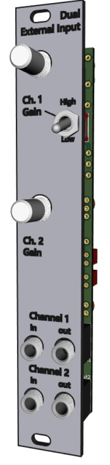

Overview

This is a 4hp Eurorack module containing two separate high-gain pre-amps for high-impedance sources like electric guitars.
- Panel: 1.6mm aluminum with black silkscreen
- PCB: Lead-free HASL surface finish
The circuit is heavily inspired by the pre-amp section of the Mutable Instruments module Ears (see the
schematic for MI's Ears). There are a couple differences worth noting:
- To fit the circuit on a single PCB with through-hole components, there are no safety-precaution diodes:
- no reverse polarity protection for the power
- no diode limiters for the input like you see in the Ears schematic
So put that TL072 in a socket lol.
- This schematic uses different values for the audio coupling capacitors than Ears: 0.1µF instead of
4.7µF.
- MI's frequency range is unnecessarily wide for our application and it is easier to find capacitors in
high quality materials like film if we decrease the capacitance.
- Our -3dB rolloff point is 1.5Hz, still plenty low.
- If you wish to use this module to amplify CVs, you must install jumpers instead of the coupling
capacitors.
Other notes on the circuit:
- A single TL072 is used but obviously this may be substituted
- Each channel has a gain control pot
- Max gain can be altered by using different resistor values. See schematic for details.
- The switch allows you to select between two different max gain values for channel 1
- When input 2 is unpatched, the signal from input 1 is normalled to input 2
- This means that by default the unit will operate as an active mult with individual gain controls.
Bill of Materials
Here is a Mouser cart
that has everything but the jacks and the potentiometers. Definitely double check this list it has not been fully verified yet.
The subminiature switch can be found for cheaper if you source it from wherever you source your Thonkiconn jacks
and snap-in pots.
| Reference |
Qty |
Value |
Footprint |
| C1,C2 |
2 |
68p |
C0G/NP0 ceramic D=5mm x W=2.5mm x P=2.5mm |
| C3,C4,C5,C6 |
4 |
0.1u |
Film capacitor L=4.6mm x W=2.0mm x P=2.5mm |
| C7,C8 |
2 |
22p |
C0G/NP0 ceramic D=5mm x W=2.5mm x P=2.5mm |
| C9,C10 |
2 |
10u |
Alum. electrolytic, D=5.0mm x P=2.5mm |
| C11,C12 |
2 |
100n |
any ceramic D=5mm x W=2.5mm x P=2.5mm |
| J1,J2,J3,J4 |
4 |
.... |
Thonkiconn jack |
| J5 |
1 |
PWR_IN |
eurorack IDC power ribbon header |
| R1,R3,R4,R9 |
4 |
510 |
resistor 1/4w |
| R2 |
1 |
250 |
resistor 1/4w |
| R5,R6 |
2 |
1M |
resistor 1/4w |
| R7,R8,R10,R11 |
4 |
10k |
resistor 1/4w |
| RV1,RV2 |
2 |
50kB |
snap-in potentiometer like RD901F |
| SW1 |
1 |
gain_sel_1 |
SPDT on-on subminiature |
| U1 |
1 |
TL072 |
Package_DIP:DIP-8_W7.62mm |
Schematic
Here is a PDF of the schematic.